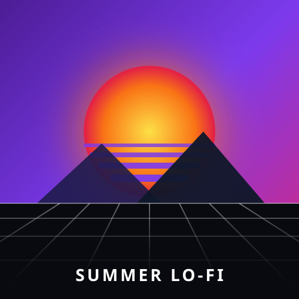

Free Sounds Collective
Chill Beats Vol. 1Cole múltiplos links de YouTube, Google Drive, CloudFront ou áudios diretos (.mp3, .wav, .ogg), um por linha.
Dica: Você também pode usar o atalho global Ctrl + V em qualquer lugar para colar direto!Insira o link completo ou o ID de uma playlist pública do YouTube ou YouTube Music para extrair todas as músicas diretamente para a fila.
| Espaço | Tocar / Pausar reprodução |
| Ctrl + V | Colar link de áudio ou YouTube na fila |
| → / ← | Avançar / Retroceder 5 segundos |
| ↑ / ↓ | Aumentar / Diminuir volume |
| N | Próxima faixa (Next) |
| P | Faixa anterior (Previous) |
| M | Ativar / Desativar mudo |
| F | Favoritar faixa atual |
| S | Alternar modo Aleatório (Shuffle) |
| R | Alternar modo Repetição (Off / All / One) |
Reprodutor Universal SPA Client-Side • 100% no seu Navegador
Desfrute de uma experiência musical moderna e contínua diretamente pelo navegador, sem necessidade de cadastro, banco de dados externo ou servidor.
Misture na mesma lista de reprodução arquivos de áudio do seu computador (MP3, WAV, OGG, FLAC), links diretos da web e vídeos ou playlists completas do YouTube.
Ao exportar o arquivo .json, suas músicas, ordem personalizada, metadados e capas embutidas ficam salvos para sempre com total portabilidade.
Devido à sandbox de segurança do navegador, ao reabrir uma lista com faixas do seu PC, basta clicar em Reconectar Pasta para reativar as músicas sem duplicá-las.
Cole links de áudio ou YouTube diretamente na tela a qualquer momento com Ctrl + V e reorganize a ordem das faixas arrastando e soltando.